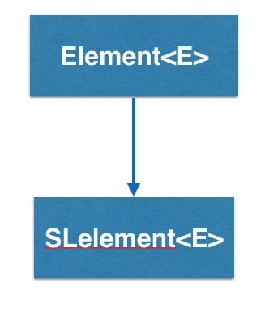
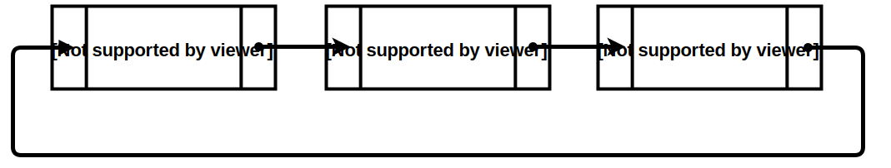

CircSLelement<E> implements a doubly linked list in BRIDGES and is inherited from SElement<E>

How does the CircSLelement<E> work?
CircSLelement<E> stands for Circular Singly Linked Element and is a type
of container that has one link, pointing to another SLelement<E>.
So an CircSLelement<E> "knows" who it is pointing at but it does not know
who is pointing at it(if any).

In the above example, CircSLelement1 points to CircSLelement2. Calling getNext()
on CircSLelement1 will return a link to CircSLelement2, and calling getNext() on
CircSLelement2 will return a link to SLelement3. CircSLelement3 points to CircSLelement1. Calling getNext() on CircSLelement3 will return a link to CircSLelement1.
Also notice that there is no getPrev(). CircSLelement2 has no idea what
element came before it. So, you CANNOT go backwards.
CircSLelement - An Example BRIDGES program
Create a new .java file
Imports
- We need to include these Bridges files to give access to all the classes/methods needed to interact with Bridges
- In your .java file, enter the following code snippets:
import bridges.connect.Bridges;
import bridges.base.SLelement;
Main Exception
- By adding a throw exception we can forgo messy try/catch blocks in our code for our Bridges calls
- In your .java file, add a throw exception to the main function so it looks like this:
public static void main(String[] args) throws Exception
Inside our Main
- First we need to create our BRIDGES object and initialize our BRIDGES Credentials
- Then we can create our SLelements
- Now link the SLelements together
- Now we pass the first element(head) of our data structure to BRIDGES
- Finally we call the visualize function
Bridges<String, String> bridge = new Bridges<String,String>(1, "YOUR_API_KEY", "YOUR_USER_ID");
Note that you will need to replace the two fields in this call with your BRIDGES credentials.
SLelement<String> e0 = new SLelement<>("Hello", "");
SLelement<String> e1 = new SLelement<>("World", "");
SLelement<String> e2 = new SLelement<>("!", "");
e0.setNext(e1);
e1.setNext(e2);
bridge.setDataStructure(e0);
bridge.visualize();
Code Summary: Your .java file should look like this
import bridges.connect.Bridges;
import bridges.base.SLelement;
public class HelloWorld
{
public static void main(String[] args) throws Exception
{
//create the Bridges object
Bridges<String,String> bridge = new Bridges<String,String>(1, "YOUR_API_KEY", "YOUR_USER_ID");
//create a circular linkedlist
CircSLelement<String> el0 = new CircSLelement<String>("Example", "0");
CircSLelement<String> el1 = new CircSLelement<String>("Of", "1");
CircSLelement<String> el2 = new CircSLelement<String>("A", "2");
CircSLelement<String> el3 = new CircSLelement<String>("Circular", "4");
CircSLelement<String> el4 = new CircSLelement<String>("List", "4");
CircSLelement<String> tail = el0;
tail = insertFront(tail, el1);
tail = insertFront(tail, el2);
tail = insertFront(tail, el3);
tail = insertFront(tail, el4);
el0.getLinkVisualizer(el1).setColor("red");
el0.getLinkVisualizer(el1).setThickness(3);
el1.getLinkVisualizer(el2).setColor("green");
el1.getLinkVisualizer(el2).setThickness(3);
el2.getLinkVisualizer(el3).setColor("blue");
el2.getLinkVisualizer(el3).setThickness(3);
el3.getLinkVisualizer(el4).setColor("cyan");
el3.getLinkVisualizer(el4).setThickness(3);
el4.getLinkVisualizer(el0).setColor("magenta");
el4.getLinkVisualizer(el0).setThickness(3);
el0.getVisualizer().setColor("red");
//pass first element of data structure
bridge.setDataStructure(el0);
//visualize data structure
bridge.visualize();
}
}
Create a new .cpp file
Includes
- We need to include these Bridges headers to give access to all the classes/methods needed to interact with Bridges
- In your .cpp file, enter the following code snippets:
#include "Bridges.h"
#include "CircSLelement.h"
Namespace
- By using this namespace we can forgo messy scope specifiers in our code for our Bridges calls
- In your .cpp file, enter the following code snippet:
using namespace bridges;
Inside our Main
- First we need to initialize our Bridges Credentials
- Then we can create our CircSLelements
- Now link the CircSLelements together
- Now we pass the first element of our circular singly linked list to Bridges
- Finally we call the visualize function
Bridges::initialize(1, "YOUR_API_KEY","YOUR_USER_ID");
Note that you must replace the two strings above with your BRIDGES credentials.
CircSLelement<int> *el0 = new CircSLelement<int>(0, "0");
CircSLelement<int> *el1 = new CircSLelement<int>(1, "1");
CircSLelement<int> *el2 = new CircSLelement<int>(2, "2");
CircSLelement<int> *el3 = new CircSLelement<int>(3, "3");
// link nodes
el0-<setNext(el1);
el1-<setNext(el2);
el2-<setNext(el3);
el3-<setNext(el0);
Bridges::setDataStructure(e11);
Bridges::visualize();
Code Summary: Your .cpp file should look like this
#include "Bridges.h"
#include "CircSLelement.h"
using namespace bridges;
int main()
{
//create the Bridges object
Bridges::initialize("YOUR_API_KEY","YOUR_USER_ID",1);
//create elements
CircSLelement<int> *el0 = new CircSLelement<int>(0, "0");
CircSLelement<int> *el1 = new CircSLelement<int>(1, "1");
CircSLelement<int> *el2 = new CircSLelement<int>(2, "2");
CircSLelement<int> *el3 = new CircSLelement<int>(3, "3");
// link nodes
el0-<setNext(el1);
el1-<setNext(el2);
el2-<setNext(el3);
el3-<setNext(el0);
//pass first element of data structure
Bridges::setDataStructure(e11);
//visualize data structure
Bridges::visualize();
}
Bridges Visualization
- Once all your code is in order, run your file.
- Assuming all your code is correct and it compiles correctly, a link to the Bridges website will be generated on the console.
- Copy/paste this link into your favorite browser to view a visualization of the data structure you just created.
- It should look something like this:
Well done! You’ve just created your first Bridges project!